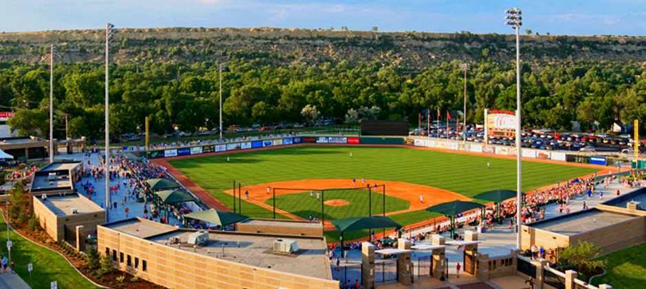

The Billings Mustangs are a minor league baseball team based in Billings, Montana. The Mustangs are the Pioneer League Rookie affiliate of the Major League Cincinnati Reds. The team has been a part of the Pioneer League since 1948 with a five-year gap between 1964 and 1968, and has been affiliated with the Reds since 1974 (after an affiliation with the Kansas City Royals). Along with the Elizabethton Twins, the Mustangs affiliation with the Reds is the longest-running among all rookie-level teams. The team was officially established on November 4, 1947. The Mustangs play at Dehler Park, named after Jon Dehler, a Billings businessman who bought the naming right to the field in 2007. Prior to the 2008 season the Mustangs played at Cobb Field (named after Bob Cobb who was responsible for bringing professional baseball to the city of Billings). Cobb Field was demolished in September 2007 to make way for the new park. The Mustangs won three consecutive Pioneer League titles from 1992 and 1994, then won another in 1997. In 2003, Billings swept the Provo Angels in the Championship Series, winning two games to none. Provo had tied the league record for wins that year with 54. Billings, the last team to qualify for the postseason, won Game 1 at Provo 8-5 in 11 innings, then, Billings won 3-0 on a no-hitter by James Paduch to win the Championship in front of a sold-out Cobb Field in Billings. The game was a classic pitchers duel between two of the top pitchers in the league (Provo's being 2003 Pioneer League Pitcher of the Year Abel Moreno). In 2006, Chris Valaika set a Pioneer League record with a 32-game hitting streak during the Mustangs 51-win campaign. Many Major League stars have begun their pro careers in Billings. These include George Brett, Reggie Sanders, Paul O'Neill, Trevor Hoffman, Keith Lockhart, Danny Tartabull, Ben Broussard, Scott Sullivan, Aaron Boone, Adam Dunn, Austin Kearns, and B. J. Ryan. Follow @Mustangs
